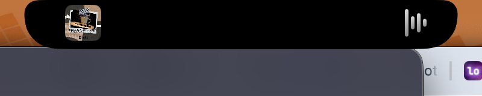
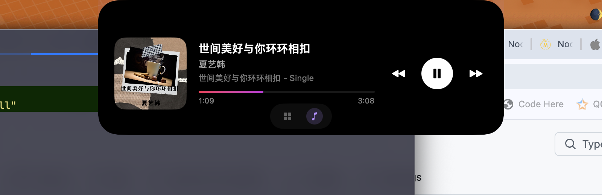
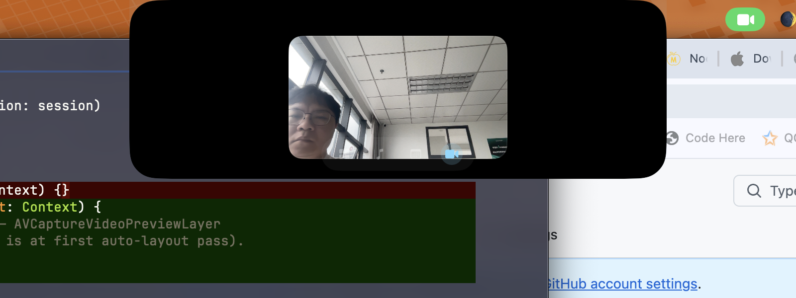
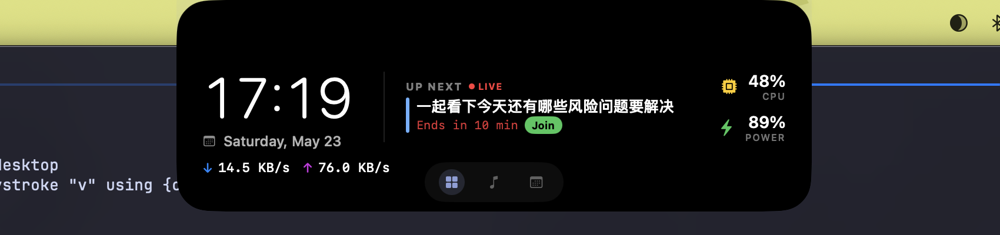

Free · Open source · macOS 14+
Your MacBook's notch,
but useful.
Notchy turns the hardware notch into a tactile control surface — clipboard history, Now Playing, a Pomodoro timer, file drop tray, mirror, calendar, AirPods battery, and more. All anchored on the notch. None of it in your way.

Everything you wish your notch did.
One small surface. Eight things you actually do every day.
-
📋
Clipboard manager
⌘⇧V opens a Paste-style horizontal card strip with your last 100 copies. Text, URLs, images, files, colours, code. Privacy by design.
-
🎵
Now Playing
Album art and waveform flank the notch while music plays. Hover to expand into a full player with live progress, scrubber, and audio output badge.
-
🗂
Drop tray
Drag a file onto the notch. Panel expands into a temporary tray with AirDrop, Email, and Clear. Drag chips back out to any app.
-
⏱
Pomodoro timer
5 / 15 / 25 minute presets from the menu bar. Ring progress in the notch. Notification fires on completion. Stays visible while music plays.
-
📷
Mirror
Front-camera preview in the notch. One-second sanity check before a video call. ⌘⌥M toggles it.
-
📅
Calendar
Today's upcoming events at a glance. Live event badge on the dashboard when something's about to happen.
-
🎧
AirPods burst
Connect AirPods, the notch briefly expands showing device name and L / R / Case battery. Dismisses itself in 3 seconds.
-
📊
Dashboard
Default hover view: big clock, today's date, next calendar event, live CPU and battery readouts. ⌘⌥N opens it instantly.
New in v0.3
A clipboard manager that lives in your notch.
Press ⌘+⇧+V. The panel drops out from under the notch with your last 100 copies as a horizontal card strip. Filter by kind, hit a number key to paste, hit Enter to paste what you're hovering on.
- Six item kinds — text, URL, image, file, colour, code — each with a tailored preview.
- Smart paste — pastes back into the previously-focused app, then restores your prior clipboard 80 ms later.
- Privacy first — local SQLite, zero network. Default-excludes 1Password, Bitwarden, Keychain, LastPass.
- SHA-256 dedupe — copying the same string twice bumps the row; doesn't duplicate.
- Retention purge — 7 / 30 / 90 days or never. Pause toggle in the menu bar.


Live activities, anchored
It grows from the notch. It doesn't take it over.
Music plays, album art and waveform extend the notch sideways like wings. A timer's running, you see the countdown ring on the right. AirPods connect, a 3-second burst tells you their battery. Drag a file, the tray slides down. Hover to expand into a full panel. Walk away and it disappears.
Every widget is built around the principle that the notch is a tool, not a stage. Nothing pulses for attention. Nothing covers your work.
Dashboard
A glanceable home for everything.
Hover the notch with nothing else going on and the dashboard expands: big clock, today's date, the next event from your calendar, live CPU and battery. Tab between the dashboard and any active widget without breaking focus.
- ⌘+⌥+N — toggle dashboard from anywhere
- ⌘+⌥+M — toggle Mirror
- ⌘+⇧+V — open clipboard panel
- Two-finger horizontal swipe over the notch → next / previous track

Open source
MIT licensed. Every line of code is on GitHub. No telemetry. No analytics. No phone-home.
Free, forever
Not a freemium. Not a trial. Not paywalled. We don't even take donations because we don't need to.
Local-first
Your clipboard history, your timer, your widgets — all live in your own user folder. Zero servers.
Native
SwiftUI + AppKit. No Electron, no Web. Tiny memory footprint, runs cool on battery, looks like a Mac app should.
Get Notchy.
macOS 14 Sonoma or later · Apple Silicon · 800 KB download
xattr -dr com.apple.quarantine /Applications/Notchy.app